PowerQuery - a practical introduction
Previous attendees have said…
- 40 previous attendees have left feedback
- 95% would recommend this session to a colleague
- 88% said that this session was pitched correctly
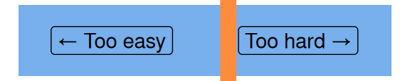
- Definitely more intermediate, but great info. Well explained
- I’ve only said no as we don’t have up to date desktop versions of the software installed, and couldn’t make it work in our outdated 2013 version, so struggled to follow. No reflection on Brendan’s excellent (as ever) style or delivery.
- issues in loading data and due to speed of which trainer was moving at could not follow along. transpired i needed an addon to excel and had to leave the session
Welcome
This session is 🌶 a beginner-level introduction to PowerQuery. It’s practical, so you’ll need access to PowerQuery to complete the session. There are three ways of getting that access. In order of preference, you can use either:
- M365 Excel desktop (best and easiest for this training)
- Power BI desktop (also completely fine)
- M365 Excel on the web in a pinch - this is still new and experimental
There are also several other versions of PowerQuery available in older versions of Excel on the desktop. We’d recommend not using those for this session as there are many differences between all the versions, and we can’t accommodate all of those in a session like this. You’ll also definitely need basic competency in Excel or Power BI to get the most out of this session.
Session outline
- what is PowerQuery, and why might you use it?
- getting data into PowerQuery
- basic data wrangling
- joins (merges)
- pivots
What is PowerQuery?
- Microsoft call it a “data transformation and data preparation engine”
- it’s been around since 2010, initially in Excel, and then in both Excel and Power BI
- uses code (M Formula language) but has GUI tools for most tasks
- appears in several different Microsoft tools
How I think of PowerQuery
- the right way to load any real data into Excel
- the best way to avoid repeating yourself when you’re doing Excel work
- the easiest route to automated or standardised data wrangling currently available
Getting data into PowerQuery
We’ll use some historical data about scurvy testing from the medicaldata r package for the first part of this session. Data loading is where the three flavours of PowerQuery we’re using diverge most, so do please make sure you pick the correct data loading instructions for your version below.
- Open Excel and create a new, blank, workbook
-
Data>Get & Transform Data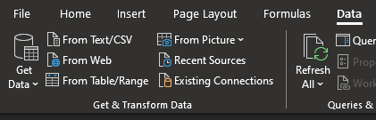 - Pick
From Weband supply the following URL -https://raw.githubusercontent.com/rfordatascience/tidytuesday/master/data/2023/2023-07-25/scurvy.csv - From the preview, select
Transform datato open PowerQuery
- Open Power BI and start a new report
- Select
Get data>From Webbutton in the ribbon 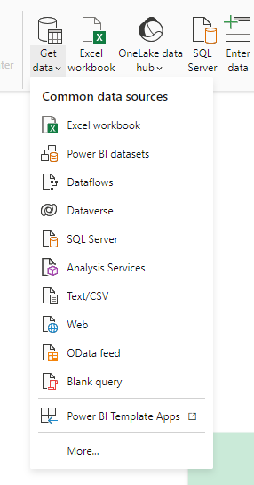 - Supply the following URL -
https://raw.githubusercontent.com/rfordatascience/tidytuesday/master/data/2023/2023-07-25/scurvy.csv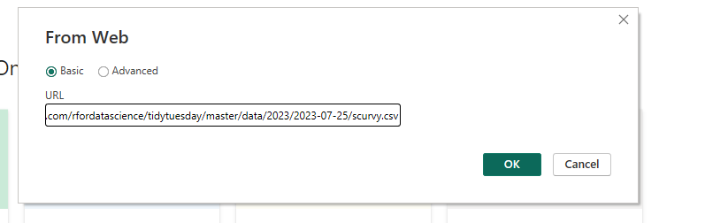 - From the preview, select
Transform datato open PowerQuery 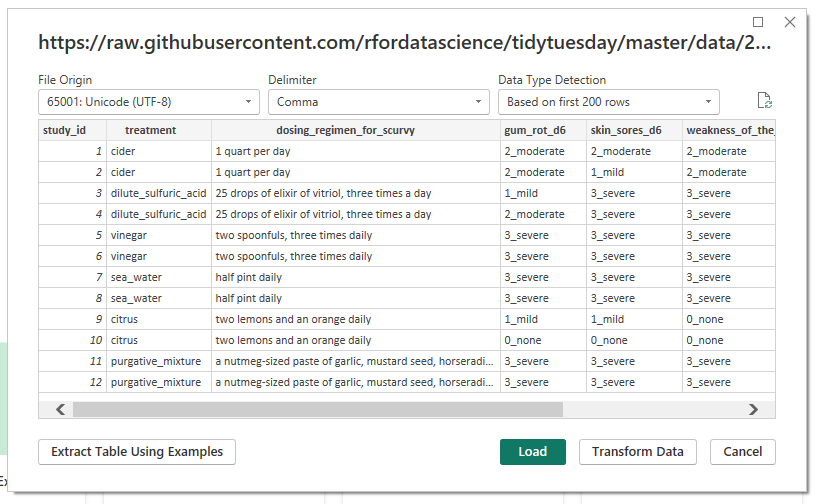 - If you’ve already got some data in your report that you’d like to transform, use
Tranform datain the ribbon to open PowerQuery: 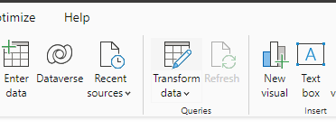
There are some limitations for most users about loading data from external sources at present. That means that we’ll use a different method to create some accessible starting data. This limitation appears to be teething trouble at present (Feb 2026), but do investigate any current issues before committing to real PowerQuery projects in practice.
- Go to https://excel.cloud.microsoft/, log in, and create a blank workbook
- Then copy and paste the following data into that workbook:
| study_id | treatment | dosing_regimen_for_scurvy | gum_rot_d6 | skin_sores_d6 | weakness_of_the_knees_d6 | lassitude_d6 | fit_for_duty_d6 |
|---|---|---|---|---|---|---|---|
| 1 | cider | 1 quart per day | 2_moderate | 2_moderate | 2_moderate | 2_moderate | 0_no |
| 2 | cider | 1 quart per day | 2_moderate | 1_mild | 2_moderate | 3_severe | 0_no |
| 3 | dilute_sulfuric_acid | 25 drops of elixir of vitriol, three times a day | 1_mild | 3_severe | 3_severe | 3_severe | 0_no |
| 4 | dilute_sulfuric_acid | 25 drops of elixir of vitriol, three times a day | 2_moderate | 3_severe | 3_severe | 3_severe | 0_no |
| 5 | vinegar | two spoonfuls, three times daily | 3_severe | 3_severe | 3_severe | 3_severe | 0_no |
| 6 | vinegar | two spoonfuls, three times daily | 3_severe | 3_severe | 3_severe | 3_severe | 0_no |
| 7 | sea_water | half pint daily | 3_severe | 3_severe | 3_severe | 3_severe | 0_no |
| 8 | sea_water | half pint daily | 3_severe | 3_severe | 3_severe | 3_severe | 0_no |
| 9 | citrus | two lemons and an orange daily | 1_mild | 1_mild | 0_none | 1_mild | 0_no |
| 10 | citrus | two lemons and an orange daily | 0_none | 0_none | 0_none | 0_none | 1_yes |
| 11 | purgative_mixture | a nutmeg-sized paste of garlic, mustard seed, horseradish, balsam of Peru, and gum myrrh three times a day | 3_severe | 3_severe | 3_severe | 3_severe | 0_no |
| 12 | purgative_mixture | a nutmeg-sized paste of garlic, mustard seed, horseradish, balsam of Peru, and gum myrrh three times a day | 3_severe | 3_severe | 3_severe | 3_severe | 0_no |
- Convert your data into a table (
Insert>Table) with headers - Then load that table into PowerQuery
Data>Get & Transform Data>From Table/Range
First view of PowerQuery
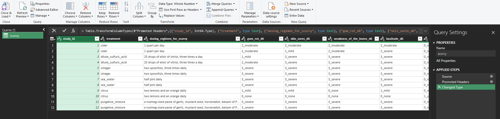
- Queries (= datasets) on the left
- ribbon menu at the top
- Query settings (= the changes you’ll make to your data) on the right
- Excel-ish data preview in the middle
Basic data wrangling
- right click the
study_idcolumn and selectRemove- the column will disappear
- but you’ll also gain a step in your Applied Steps field 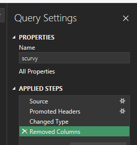
- you can edit this step
- if you’re code-confident, you can edit the formula to read
= Table.RemoveColumns(#"Changed Type",{"study_id", "treatment"})to also remove the treatment column - and you can remove the step using the X next to the step name
- if you’re code-confident, you can edit the formula to read
- you should also try renaming and reordering your columns in the same way
- once you’ve had a play, please remove the steps until you’re left with the data you started with (so delete back to “Changed Type”)
Replacing values
- we can also work with individual values
- our values are a number, then an underscore, then a word
- we can
Split columnat the underscore - we could also replace the odd underscores in the treatment column
Reshaping data
- we could go column by column here splitting, but an easier approach would be to re-shape the data
- select the first three columns, and select
Unpivot Other Columns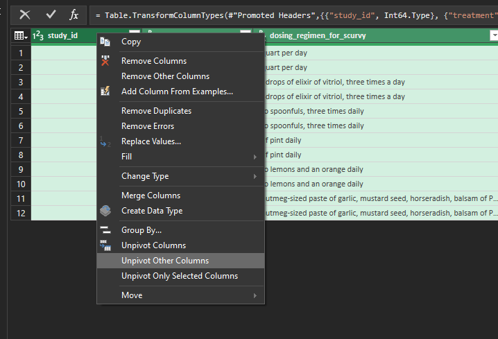 - then split, change type, and generally tidy up
Add columns
Our treatment and dosing columns are annoying. Let’s make a new, joined, column for them:
- select
Custom Column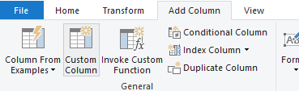 - you can click the gearwheel next to the step if you’d like to go back and tweak
Close and load / Close and Apply sends your data back to Excel/Power BI
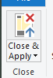
Getting more fancy: a bigger dataset
- please load the Health and Care Experience survey results from 2023-4 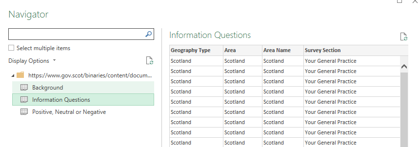
- or alternative local version
- for Excel on the web, you’ll need to download that file to your computer, then upload to Excel on the web before opening the data in PowerQuery
- please load both the proper datasets (and ignore the background) 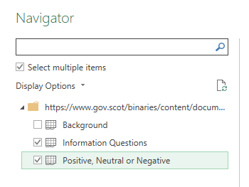
A challenge
Can you find the number of responses to each question for your local NHS board? You should be able to re-work this data to give something like: 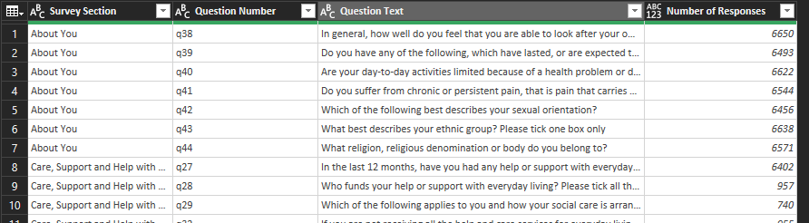
Some hints
- filtering works like Excel, but is destructive
- unpivoting, doing something to all the rows, then re-pivoting is a great way to work across lots of columns
- you can join structurally similar datasets using
Append Queries as New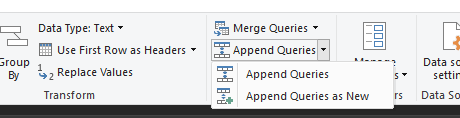 - you can deduplicate entire datasets by selecting all the columns and using
Remove Rows>Remove Duplicates